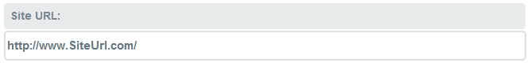
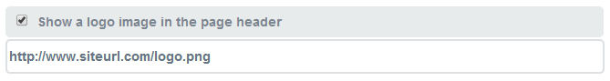
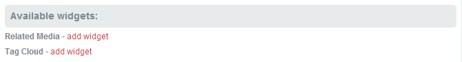
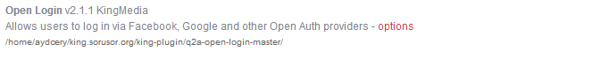
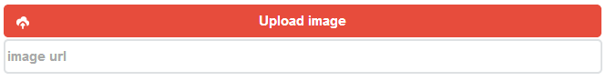
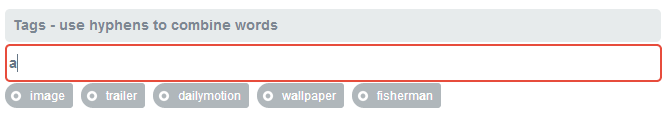
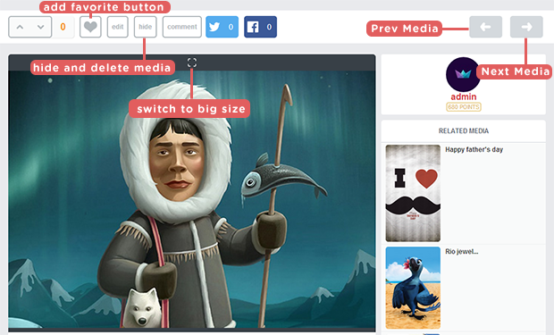
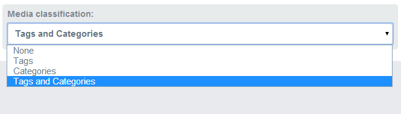
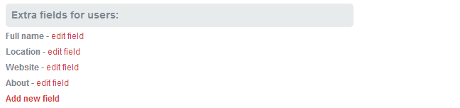
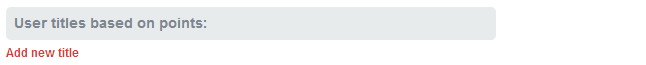

King Media
Media share script
- created: 05/30/2014
- latest update: 03/25/2021
- by: Red Kings
- https://codecanyon.net/user/redkings
- email: mediakings@outlook.com
What is this?
KingMedia is a content sharing script suitable for different posts formats:
- image upload
- image share from different hosts
- video posts with automated thumbnails creation
Features
- Supporting : Image Upload & Share From Url , Youtube, Vimeo, Vine, Instagram, Metacafe, DailyMotion
- Log in via Facebook, Google, Yahoo, Github and other OAuth/OpenID providers.
- Search for videos
- Point System Users
- User Profile Page
- User Wall
- Easy to change Language
- Simple Admin Panel
- Moderation for Guest Submission
- Facebook Comment
- Social Share Buttons
- Guest Submission
- Seo Url
- Tags or Category System
Before Installation
Make sure you have:
-
A web server which you can access via FTP or SFTP.
-
A text editor.
-
A web browser.
And make sure your web server is running:
-
Web serving software such as Apache. PHP 4.3 or later, PHP 5.x for all functionality.
-
MySQL 4.1 or later, MySQL 5.x for best performance.
If you are not sure about this, please check with your web hosting provider.
How to Install ?
1 - Create a MySQL database, and a MySQL User with full permissions for that database.
2 - Note down the MySQL details: username, password, database name and server host name. If MySQL is running on the same server as your website, the server host name is likely to be 127.0.0.1 or localhost.
3 - Open king-config.php in your text editor, insert the MySQL details at the top, and save the file. Do not use a word processor such as Microsoft Word for this, but rather Notepad or another appropriate text editing program.
define('QA_MYSQL_HOSTNAME', '127.0.0.1');
define('QA_MYSQL_USERNAME', 'your-mysql-username');
define('QA_MYSQL_PASSWORD', 'your-mysql-password');
define('QA_MYSQL_DATABASE', 'your-mysql-db-name');
4 - Place all the KingMedia files (including .htaccess) in the appropriate location on your web server:
5 - Open the appropriate web page for KingMedia in your web browser, for example:
-
If you installed KingMedia at the root of a domain, http://www.mysite.com/
-
If you installed KingMedia in a subdirectory, http://www.mysite.com/king/
6 - Follow the on-screen instructions to set up your database and administrator account. That's ALL !
if installation doesn't work import database/database.sql to your mysql phpmyadmin ;
username: admin
pass : admin
email: admin@admin.com
(change after login)
and than dont forget to insert your domain on admin panel > general > site url ,
After Installation
1 - Go to Admin page and be sure your page URL look like this ( must be " / " end of url )

2 - Go to Admin > Layout and insert your logo url

3 - You can Add related media and tag cloud widgets

4 - For Social Logins for example ; facebook, twitter, aol ..... go to admin > plugins and click options of Open Logins plugin ;

Quick Start Guide
-
This script is supporting image upload , image share by url and video share by youtube, vine, vimeo, dailymotion, instagram videos, metacafe...

upload or share image by URL
-
You can insert tags for your media and it will suggest you tags when you start typing

-
On media page users can write comments , can add favorite , can vote media or comments , hide - delete media ...

Admin Panel
-
You can choose URL structure for seo. We recommend first section if your hosting support .htaccess

-
You can choose Media classification if you select "categories" or "tags and categories"section you must create categories at admin > categories

-
You can select profile fields of users or can add new fields on admin > users

-
You can create User titles based on points on admin > users

-
You can choose comment type or you can insert Minimum - Maximum length of media title media url on admin > lists page
-
You can write your own points system on admin > points page
If you have another question you can ask on support page http://kingsupport.sorusor.org
You can download free plugins from here; Add-ons